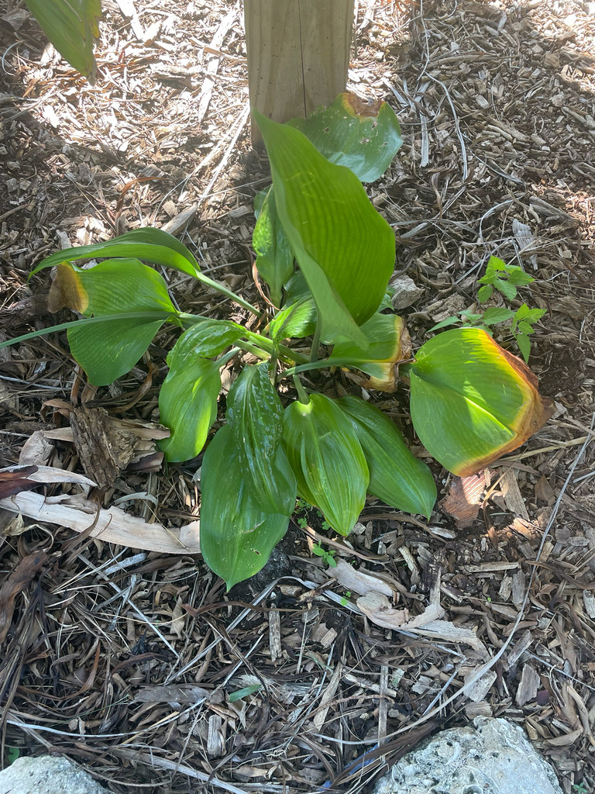

- Low in the middle of Bird of Paradise Island, beneath the towering birds, sits the most historically precious plant in the park: an Amazon Lily handed down through the Baden family since the 1880s.
- It has survived nearly a century and a half the way heirloom plants do — cutting after cutting, bulb division after bulb division, passed from one generation to the next.
- Hurricane saltwater recently flooded it down to a few bare stubs. It refused to quit, and is pushing back up again — a fragrant white-flowered Amazonian forest bulb that simply will not die.
- Look for the placard that tells its story, tucked among the giant Bird of Paradise, a Yellow Elder, and a Geiger tree.
Native to the shaded, humid forest floors of the western Amazon basin — Peru and Colombia, in the foothills of the Andes. A bulb of the amaryllis family adapted to deep dappled shade, which is why it thrives low and protected here on Bird of Paradise Island rather than out in the open sun.
- The Amazon Lily is Palma Sola's living heirloom. The specimen low in the center of Bird of Paradise Island has been in the Baden family since the 1880s, kept alive across roughly a century and a half not as a single plant but as an unbroken chain of cuttings and bulb divisions — each generation lifting offsets from the last and replanting them.
- The plant you see is, in a real sense, the same plant a Baden tended before Florida was crisscrossed with highways. Nick Baden, one of the park's founders and now in his nineties, still comes to work; among other things he runs the tractor to gather the debris piles, secures the permits, and personally babysits the bonfires that keep the grounds clear.
- The lily is his family's thread running straight through the park's history.
- Botanically it's a wonderful match for that role. Eucharis is a shade-loving bulb from the Amazonian forest floor, and like many bulbs it reproduces by offsets — small daughter bulbs that cluster around the parent — so it is almost made to be divided and shared.
- That same underground bulb is why it's so hard to kill: when hurricane saltwater flooded the island and burned the foliage down to a few bare stubs, the bulbs held on below ground and began pushing up new growth. Salt-scorched to nubs, it still won't quit.
- When it's happy and in bloom, the reward is a cluster of pure white, fragrant, daffodil-like flowers held above broad, glossy, deep-green leaves — each bloom a ring of six tepals around a green-tinged central cup, sweetly scented like jasmine. It earns its other name, the Eucharist Lily, from that luminous white.
- Its home on Bird of Paradise Island is a fine piece of park theater in itself: some twenty massive Bird of Paradise plants tower over it, with a Yellow Elder and a Geiger tree sharing the bed, and the small Amazon Lily and its storied placard set low in the middle — easy to walk past, impossible to forget once you know what it is.
The Amazon Lily's fragrant white flowers can draw the occasional bee or butterfly, but it offers little nectar and isn't a significant wildlife plant in Florida — its tubular, scent-forward flowers are built for specific tropical pollinators back in its Amazonian home.
Its value here is human and historical rather than ecological: a deep-shade groundcover bulb that anchors the understory of Bird of Paradise Island and carries 140 years of the park's family history. Most animals leave the bulb and foliage alone.
daughter bulbs that form around the parent — which is exactly how it has been propagated and passed down here for generations. Also grown from seed, but division is the traditional method. Slow, reliable, and tolerant of crowding (it actually blooms better slightly rootbound).
Clusters of 3 to 6 pure white, fragrant flowers on a leafless stalk above the foliage; each flower has six spreading tepals around a green-tinged central staminal cup, daffodil-like. Sweetly scented. Blooms one or more times a year, often in the cooler months.
Broad, glossy, dark green, ribbed, somewhat like peace-lily or hosta foliage, rising from the bulb.
Clumping, evergreen, shade-loving bulb forming tight rosettes.
On Bird of Paradise Island, look LOW and to the middle, beneath the giant Bird of Paradise and near the Yellow Elder and Geiger tree. Find the historical placard — that's your marker. Right now the lily may look like little more than a few stubs recovering from salt damage; that humble appearance is part of the story.
In better seasons, watch for the broad glossy leaves and the fragrant white flower clusters held above them.
Don't eat any part of this plant. Like other amaryllis-family bulbs it contains lycorine-type alkaloids — most concentrated in the bulb — that can cause nausea and vomiting.
It's not a serious hazard in the garden, but it isn't for eating.
It's mildly toxic to dogs as well; chewing the bulb or foliage can cause drooling, vomiting, and digestive upset. Discourage digging and chewing.
- © Randall Carter (CC-BY-NC), via iNaturalist